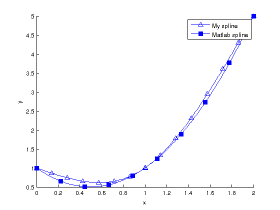
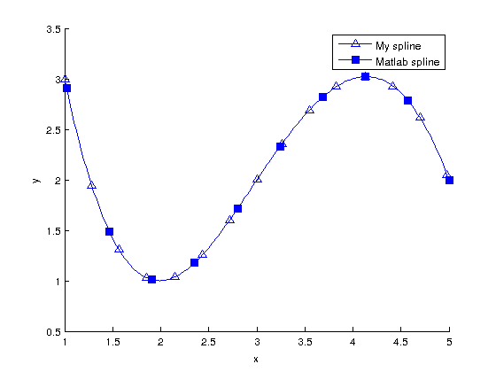
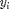

Math 340 - Lab #7 - Cubic spline
Contents
1. Problem from the homework: 4.3. 1.c
Find the cubic spline interpolant, and solve the system of equations using MATLAB, them compare your results with MATLAB built-in function spline(x,Y,xx) by plotting them on the same axes.
clear all, clc % given points xi = [0, 1, 2]; yi = [1, 1, 5]; % system of equations A = [0 0 0 1 0 0 0 0; ... 0 0 0 0 8 4 2 1;... 1 1 1 1 0 0 0 0;... 1 1 1 1 -1 -1 -1 -1;... 3 2 1 0 -3 -2 -1 0;... 6 2 0 0 -6 -2 0 0;... 0 2 0 0 0 0 0 0;... 0 0 0 0 12 2 0 0]; rhs = [1; 5; 1; 0; 0; 0; 0; 0]; % solve the system coefs = A\rhs; % arrays for evaluating splines x1 = linspace(0,1,100); x2 = linspace(1,2,100); s1 = polyval(coefs(1:4),x1); s2 = polyval(coefs(5:8),x2); % plot figure(1) handle(1) = line_fewer_markers(x1,s1,8,'^','LineWidth',1,'MarkerSize',7); hold on line_fewer_markers(x2,s2,8,'^','LineWidth',1,'MarkerSize',7); handle(2) = line_fewer_markers([x1,x2],spline(xi,yi,[x1,x2]),10,'s','LineWidth',1,'MarkerSize',7,'MarkerFaceColor','b'); legend(handle,{'My spline','Matlab spline'}) hold off

2. Problem from the homework: 4.3. 2.b
Find the cubic spline interpolant, and solve the system of equations using MATLAB, them compare your results with MATLAB built-in function spline(x,Y,xx) by plotting them on the same axes.
clear all, clc % given points xi = [1, 2, 3, 4, 5]; yi = [3, 1, 2, 3, 2]; % system of equations A = [1 1 1 1 0 0 0 0;... 0 0 0 0 125 25 5 1;... 27 9 3 1 0 0 0 0; ... 27 9 3 1 -27 -9 -3 -1;... 27 6 1 0 -27 -6 -1 0;... 18 2 0 0 -18 -2 0 0;... 8 4 2 1 0 0 0 0;... 0 0 0 0 64 16 4 1]; rhs = [3; 2; 2; 0; 0; 0; 1; 3]; % solve the system coefs = A\rhs; % arrays for evaluating splines x1 = linspace(1,3,100); x2 = linspace(3,5,100); s1 = polyval(coefs(1:4),x1); s2 = polyval(coefs(5:8),x2); % plot figure(2) handle(1) = line_fewer_markers(x1,s1,8,'^','LineWidth',1,'MarkerSize',7); hold on line_fewer_markers(x2,s2,8,'^','LineWidth',1,'MarkerSize',7); handle(2) = line_fewer_markers([x1,x2],spline(xi,yi,[x1,x2]),10,'s','LineWidth',1,'MarkerSize',7,'MarkerFaceColor','b'); legend(handle,{'My spline','Matlab spline'})

Note
MATLAB spline function uses not-a-knot boundary condition. This explains why in problem #2 we have better agreement than in #1.
Extra credit
Write a function that will solve tridiagonal system of equations given in equation (18) :
http://mathworld.wolfram.com/CubicSpline.html
As input, your function should take the data points

, and it should return the vector . Do not use any loops!Compare your cubic spline with the one obtained from question #1 by plotting them on the same axes.